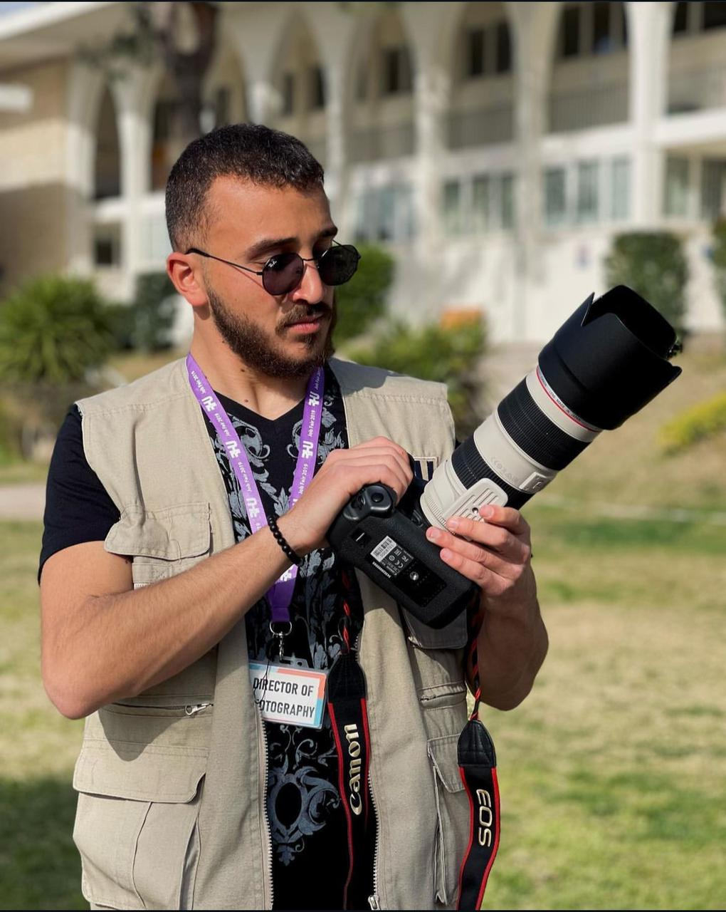

Mouaz Kabbour
Capturing Beauty Through My Lens
I am a dedicated photographer and videographer with a strong eye for detail and eagerness for visual storytelling. I bring over 6 years of experience in capturing events, portraits, and branded content. I am proficient in using professional cameras and editing software in order to create high-quality images and video.
I bring a blend of technical expertise and creative vision to each initiative. My goal is to continue growing as a visual creator and make work that leaves a lasting impression.
Recognition & Publications
- RHU Student Events | 2022
- Graduation Ceremony | 2023
My Gear
- 1DX Mark II
- 70-200 Lense
- 16-35 Lense
- 24-105 Lense